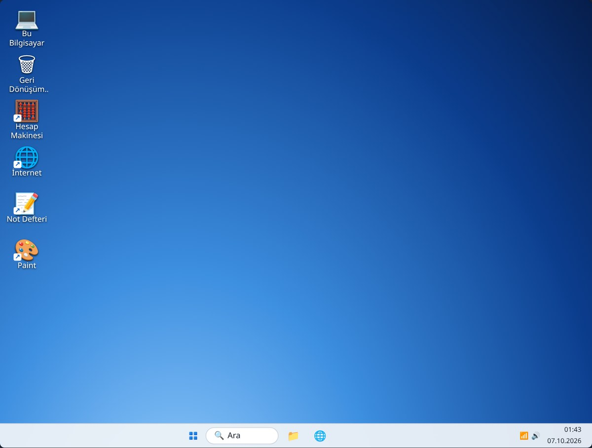
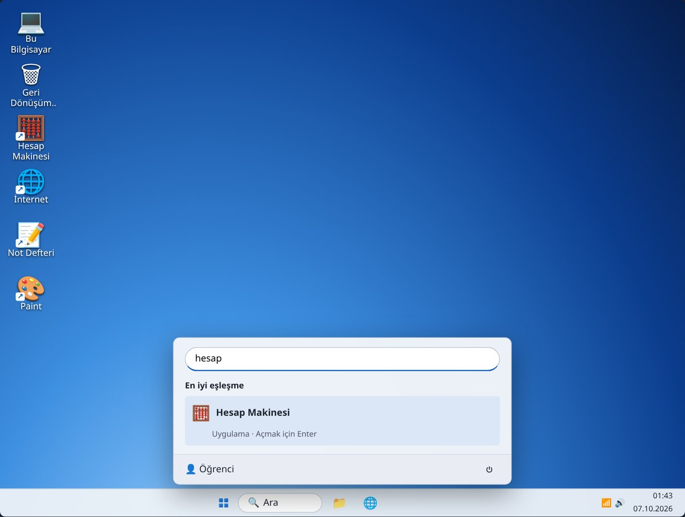
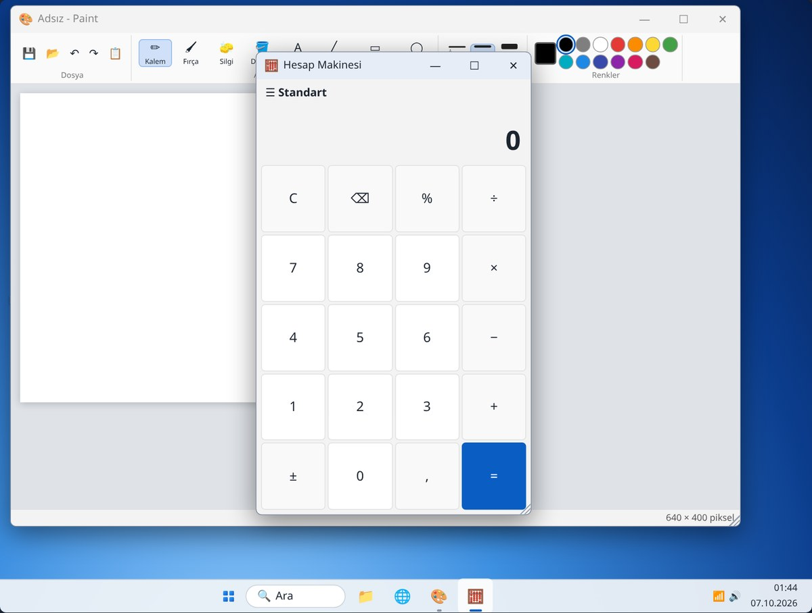
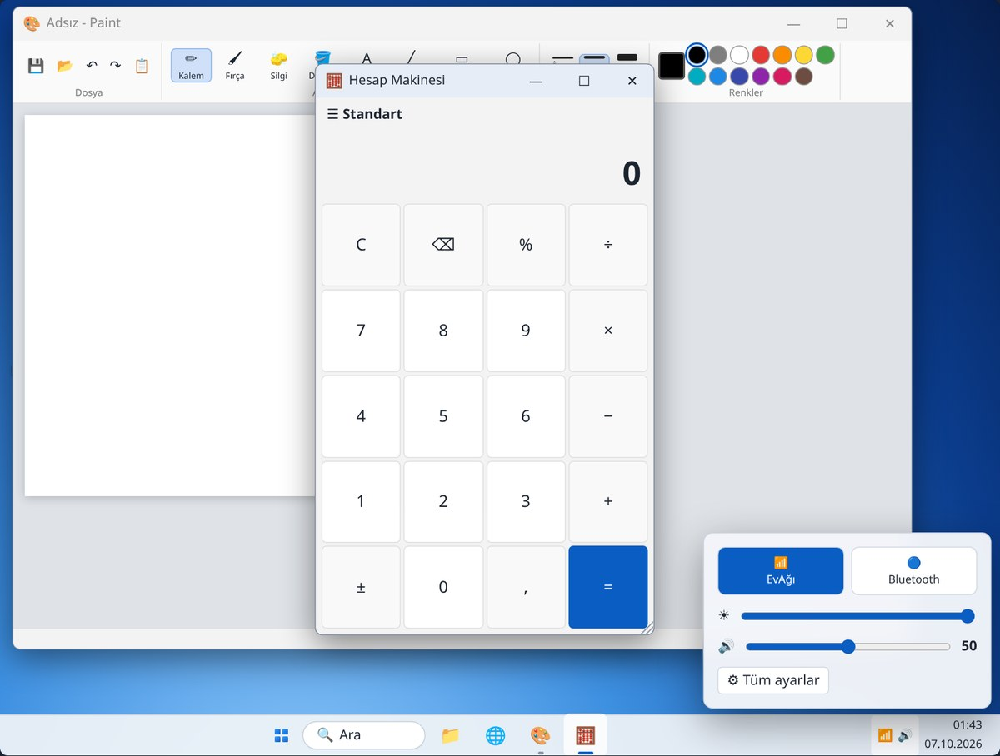

5. Hafta: Masaüstü, Başlat menüsü ve görev çubuğu
Alıştırmalar
Bu hafta

Alıştırma 1
| 1 | Başlat’a tıklayın, açılan menüden Paint’e tıklayın. |
|---|---|
| 2 | Başlat’ı açıp hemen hesap yazın, Enter’a basın. |
Gerçek bilgisayarda da ⊞ tuşuna basıp yazmaya başlamak en hızlı yoldur.

Alıştırma 2

Alıştırma 3
| Alt + Tab | Alt’ı basılı tutup Tab’a basın: açık programlar arasında geçersiniz. |
|---|---|
| Ses simgesi | Sağ alttaki simgeye tıklayın, ses çubuğunu sürükleyin. |
Hoparlörden ses gelmiyorsa ilk bakılacak yer ses düzeyidir.

Özet
| Başlat | Bütün programlar; açınca hemen yazarak arayabilirsiniz |
|---|---|
| Görev çubuğu | Açık programlar: tıklayınca öne gelir ya da küçülür |
| Sağ alt köşe | Masaüstünü göster |
| Alt + Tab | Açık pencereler arasında geç |
| Ses ve Wi-Fi simgeleri | Ses düzeyi ve internet bağlantısı |